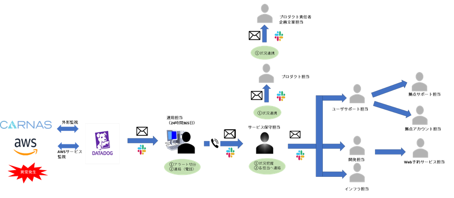
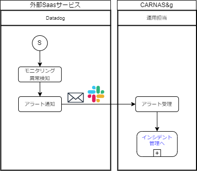

03.モニタリングとイベント管理_グリッドテーブル¶
3.1 概要
監視システム（Datadog/CloudWatch）を用いて24時間365日監視し、イベント発生時には、速やかに所定の連絡先へ連絡する。
3.2 担当者
モニタリングとイベント管理の担当は「運用担当」とする。
3.3 体制
イベント管理の体制および連絡経路については、下図の通りとする。
3.4 業務フロー
3.5 監視（イベント管理）の対象範囲
監視対象は下記の通りとする。
環境 |
対象 |
モニタリング |
外形監視 |
概要説明 |
CARNAS g サービス |
AWSサービス(各インフラ) |
〇 |
x |
|
業務サイト |
〇 |
〇 |
||
テナント解説申し込みサイト |
x |
x |
||
契約サポートサイト |
x |
x |
||
管理サイト |
x |
x |
||
Web予約サービス |
Web予約サービス |
x |
〇 |
バックエンドのみ対象。フロントエンドはDynax社が実施 |
検診機関ネットワーク |
エッジサーバー |
x |
x |
ログインログ、イベントログのみS3に出力する通信ログは、取得しない |
中継ポイント |
x |
x |
||
連携システム(医事DB) |
x |
x |
||
クライアントPC(Excel編集アプリ) |
x |
x |
||
外部Saasサービス |
認証サービス(Auth0) |
x |
x |
|
メール配信サービス(SendGrid) |
x |
x |
||
モニタリングサービス(Datadog) |
x |
x |
3.6 監視（イベント管理）の項目
監視項目の一覧は、以下とする。 ※当面はDatadogは使わずCloudWatchで行う
監視項目 |
内容 |
運用担当向け（Datadog） |
|
サービス稼働状況 |
SLO達成率（年）、月間稼働率（月） サービス単位稼働率（月／年） 対象：bff bff-ex business core pub engin-file engin-pdf engin-file-billing engin-pdf-billing |
データーベース稼働状況 DB全体の年間稼働率（年）、DB全体の月間稼働率（月） |
サービス単位稼働率（月／年） 対象：business core pub report AWSサービス単位稼働率（月／年） 対象：ElasticCache OpenSearch |
その他稼働率 |
フロントALB（月／年）、バックエンドALB（月／年） |
イベント インシデント |
Issue list、AWS Cloudwatchログ（警告、エラー）、datadog側のイベント、AWS Cloudwatchログ（サマリ） |
リソース状態 |
EC2,ECS,RDS,container,forgateの各CPU、メモリー、ネットワーク利用状況、モニターサマリー |
アクセス数 PV等 |
ALBリクエスト回数、ALBアクティブコネクション |
DBストレージの使用量状況 |
Aurora ElasticSearch |
オブジェクトストレージの使用量状況 |
S3 Bucket Cloudwatch Logs |
開発担当向け（Datadog） |
|
フロントエンドの状況 （ALBの主要なログ分析） |
HTTPエラーログ／タイムアウトログ WAFのブロックログ HTTPエラー集計 時間のかかっているエンドポイント アクセス数の多いエンドポイント |
バックエンドの状況 （アプリやECS関連の主要メトリクスやログ） |
ECS CPU、メモリ使用率、ECS CPU、メモリ使用率（サービス毎） |
ECS/forgate関連の主要なグラフやリスト（CPU使用率、メモリ空き容量、IO回数やデータ量、スケールアウト状況） |
forgate CPU、メモリ使用率（コンテナ毎） forgete READ/WRITE回数・バイト数（コンテナ毎） ECSイベント一覧 ECSサービス稼働率 |
バックエンドエンドステータスの状況 （AuroraやECS、SQS、Redisの主要なメトリクス） |
postgresクエリ数、応答時間、クエリヒット数 redisクエリ数、応答時間、クエリヒット数 SQS送受信メッセージ数 |
3.7 モニタリングのよる異常検知
実行中のモニタリングを、下記に示す。 ※当面はDatadogは使わずCloudWatchで行う
モニター種別 |
モニター名 |
概要 |
対象メトリクス |
アラート |
ワーニング |
復旧 |
死活エラー |
[CARNAS &g] RDS DB接続数 |
RDS DB接続数 接続数が0の場合、異常と判断 |
aws.rds.database_connections |
接続数=0 |
接続数=2 |
接続数=2以上 |
[CARNAS &g] RDS スループット（送信） |
RDS スループット（送信） スループットが0の場合、異常と判断 |
aws.rds.network_transmit_throughput |
スループット=0 |
スループット=2 |
スループット=2以上 |
|
[CARNAS &g] RDS スループット（受信） |
RDS スループット（受信） スループットが0の場合、異常と判断 |
aws.rds.network_receive_throughput |
スループット=0 |
スループット=2 |
スループット=2以上 |
|
[CARNAS &g] ECS CPUユニット数（サンプルカウント） |
ECS CPUユニット数 ユニット数が0の場合、異常と判断 |
aws.ecs.cpuutilization.samplecount |
カウント数=0 |
カウント数=1 |
カウント数=1以上 |
|
[CARNAS &g] ECS CPUユニット数（サンプルカウント）（サービス別） |
ECS CPUユニット数（サービス別） ユニット数が0の場合、異常と判断 |
aws.ecs.cpuutilization.samplecount |
カウント数=0 |
カウント数=1 |
カウント数=1以上 |
|
バッチ処理 |
[CARNAS &g] lambdaエラー率 |
lambdaエラー率 lambdaエラー率上昇で異常と判断 |
aws.lambda.errors aws.lambda.invocations |
エラー率=80 |
エラー率=70 |
エラー率=0 |
スケジュール処理の失敗 |
[CARNAS &g] スケジュール処理失敗回数 |
ルール呼出し失敗回数 |
aws.events.failed_invocations |
回数>2 |
回数>1 |
回数<0 |
[CARNAS &g] スケジュール処理失敗率 |
ルール呼出し失敗率 |
aws.events.failed_invocations aws.events.invocations |
失敗率=10 |
失敗率=5 |
失敗率=0 |
|
データーベース負荷 |
[CARNAS &g] RDS CPU使用率 |
RDS CPU使用率 使用率上昇で異常と判断 |
aws.rds.cpuutilization |
負荷70％以上 |
負荷50％以上 |
負荷20％以下 |
[CARNAS &g] RDS CPU使用率（business） |
RDS CPU使用率 対象 business 使用率上昇で異常と判断 |
aws.rds.cpuutilization |
負荷70％以上 |
負荷50％以上 |
負荷20％以下 |
|
[CARNAS &g] RDS CPU使用率（core） |
RDS CPU使用率 対象 core 使用率上昇で異常と判断 |
aws.rds.cpuutilization |
負荷70％以上 |
負荷50％以上 |
負荷20％以下 |
|
[CARNAS &g] RDS MAX CPU使用率 |
RDS 最大CPU使用率 使用率上昇で異常と判断 |
aws.ecs.cpuutilization.maximum |
負荷70％以上 |
負荷50％以上 |
負荷20％以下 |
|
ElasticSearchの負荷 |
[CARNAS &g] elasticsearch CPU使用率 |
es cpu使用率 |
aws.es.cpuutilization |
負荷70％以上 |
負荷50％以上 |
負荷20％以下 |
[CARNAS &g] elasticsearch CPU使用率（nodeid別） |
es cpu使用率（nodeid別） |
aws.es.cpuutilization |
負荷70％以上 |
負荷50％以上 |
負荷20％以下 |
|
[CARNAS &g] elasticsearch メモリ用使率 |
es mem使用率 |
aws.es.sys_memory_utilization |
負荷70％以上 |
負荷50％以上 |
負荷20％以下 |
|
[CARNAS &g] elasticsearch メモリ用使率（nodeid別） |
es mem使用率（nodeid別） |
aws.es.sys_memory_utilization |
負荷70％以上 |
負荷50％以上 |
負荷20％以下 |
|
[CARNAS &g] elasticsearch 検索時間 |
es 検索時間 |
aws.es.search_latency |
5ミリ秒以上 |
2ミリ秒以上 |
1ミリ秒以下 |
|
[CARNAS &g] elasticsearch Index作成時間 |
es index作成時間 |
aws.es.indexing_latency |
5ミリ秒以上 |
2ミリ秒以上 |
1ミリ秒以下 |
|
[CARNAS &g] elasticsearch Job実行状況 |
es jobスケジュール通りの実行 |
aws.es.alerting_nodes_on_schedule |
||||
[CARNAS &g] elasticsearch 異常検出プラグイン |
es 異常検出プラグインが正しく動作しているか |
aws.es.adplugin_unhealthy |
||||
外形監視レスポンス時間 |
[CARNAS &g] 外形監視 レスポンスタイム bff |
bff |
synthetics.http.response.time |
300ミリ秒以上 |
200ミリ秒以上 |
100ミリ秒以下 |
[CARNAS &g] 外形監視 レスポンスタイム bff ex |
bff ex |
synthetics.http.response.time |
300ミリ秒以上 |
200ミリ秒以上 |
100ミリ秒以下 |
|
[CARNAS &g] 外形監視 レスポンスタイム budiness |
business |
synthetics.http.response.time |
300ミリ秒以上 |
200ミリ秒以上 |
100ミリ秒以下 |
|
[CARNAS &g] 外形監視 レスポンスタイム core |
core |
synthetics.http.response.time |
300ミリ秒以上 |
200ミリ秒以上 |
100ミリ秒以下 |
|
[CARNAS &g] 外形監視 レスポンスタイム pub |
pub |
synthetics.http.response.time |
300ミリ秒以上 |
200ミリ秒以上 |
100ミリ秒以下 |
3.8 外形監視による異常検知
※当面はDatadogは使わずCloudWatchで行う
監視対象 |
Datadog |
Test URL 後で本番URLに修正 |
指定URLからの応答時間（response time） |
指定URLからのレスポンスコード（status code） |
bffの外形監視 |
Synthetic Test |
including DNS is less than 3000ms |
200 |
|
bff-exの外形監視 |
Synthetic Test |
200 |
||
businessサービスの外形監視 |
Synthetic Test |
200 |
||
coreサービスの外形監視 |
Synthetic Test |
https://tnt003.testv3.md.carnas.jp/api/common/search-institution |
200 |
|
pubサービスの外形監視 |
Synthetic Test |
200 |
||
engine-file 帳票エンジンサービスの外形監視 |
APMログで対応 |
|||
engine-pdf 帳票エンジンサービスの外形監視 |
APMログで対応 |
|||
engine-file-billing帳票エンジンサービスの外形監視 |
APMログで対応 |
|||
engine-pdf-billing帳票エンジンサービスの外形監視 |
APMログで対応 |
参照1: CARNAS_&g_testv3_341408569635_設定書 - Google スプレッドシート
外形監視の結果をもとにした障害対応フローは以下を参照
3.9 異常検知時の通知
異常検知時は監視システムから自動通知（SNS:Slack、メール）を行う。※当面はCloudWatchからメールでの自動通知のみとする。
運用担当は通知内容からレベルの識別を行い「アラート」「ワーニング」と判断された場合は、JIRA「CARNAS_SUPPORT」プロジェクト に記録する。
記録項目は、 パイロット動作検証、利用期間中の対応フロー （「Jiraチケット説明」シート）を参照。
障害復旧作業については、「インシデント管理」、恒久対策については「問題管理」で対応する。
レベル |
定義 |
通知先/通知手段 運用担当 |
アラート |
Datadogモニタリング設定にて「アラートレベルの閾値」を超えた時に通知 サービス停止/継続 即時対応が必要なイベント |
1.SNS:Slack メール（自動通知） |
ワーニング |
Datadogモニタリング設定にて「ワーニングレベルの閾値」を超えた時に通知 サービス継続 アラートレベルに達する可能性があるイベント |
1.SNS:Slack メール（自動通知） |
メール（自動通知）は、Datadog/CloudWatchから送信されるアラート通知メールであり、送信内容は一律のものとする。各所でメールを受信するMLを作成し、所定のMLへ向けて送信設定を行う。
3.10 メール・Slack（自動通知）のフォーマット
※当面は、自動通知ではなく、目視での対応とする。
3.11 監視実施時間
監視実施時間は「2.4.2 各担当の対応時間」を参照。但し、AWS基盤のメンテナンス等により停止する場合がある。監視停止については、事前に周知する。